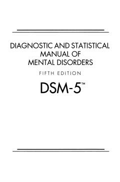

DARuhiy kasalliklarni tashxislash va tasniflash bo'yicha asosiy tibbiy qo'llanma.
Ushbu qo'llanma ruhiy kasalliklarni tashxislash va tasniflash bo'yicha xalqaro standart hisoblanadi. Unda ruhiy buzilishlarning belgilari, diagnostika mezonlari va kodlari batafsil yoritilgan.